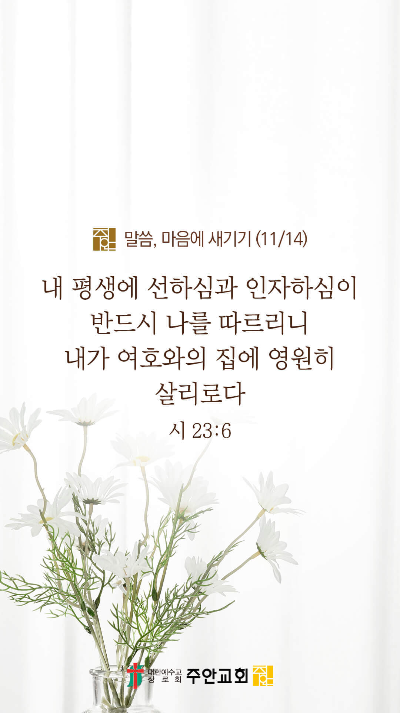

기도실 안내
2021년 11월 14일 (주일)
- 온라인 기도실은 온 회중이 함께 주님 앞으로 나아가는 자리입니다
- 30분 정도 여유를 가지고 하시기 바랍니다
- 말씀과 묵상, 찬양과 기도로 나아갑니다
- 배경 음악이 나올 수 있습니다 볼륨을 조절해주세요
준비가 되셨으면 아래의 버튼을 눌러주세요
할렐루야
내 영혼아 여호와를 찬양하라
시 146:1
- 가사를 묵상하며 읽습니다
어둠 속 헤매이던 내 영혼
갈길 몰라 방황할 때에
주의 십자가 영광의 그 빛이
나를 향해 비추어주셨네
주홍빛보다 더 붉은 내 죄
그리스도의 피로 씻기어
완전한 사랑 주님의 은혜로
새 생명 주께 얻었네
할렐루야
내 영혼아 여호와를 찬양하라
시 146:1
- 가사를 묵상하며 읽습니다
은혜 아니면 나 서지 못하네
십자가의 그 사랑
능력 아니면 나 서지 못하네
은혜 아니면 나 서지 못하네
놀라운 사랑 그 은혜 아니면
나 서지 못하네
나의 노력과 의지가 아닌
오직 주님의 그 뜻 안에서
할렐루야
내 영혼아 여호와를 찬양하라
시 146:1
- 가사를 묵상하며 읽습니다
의로운 자라 내게 말씀하셨네
완전하신 그 은혜로
은혜 아니면 나 서지 못하네
십자가의 그 사랑
능력 아니면 나 서지 못하네
은혜 아니면 나 서지 못하네
완전한 사랑 그 은혜아니면
나 서지 못하네
할렐루야
내 영혼아 여호와를 찬양하라
시 146:1
은혜아니면 by Acts29 연예인합창단
위의 찬양이 끝나면 말씀읽기를 눌러주시면 됩니다
주의 말씀은 내 발에 등이요
내 길에 빛이니이다 (시119:105)
오늘의 말씀입니다
음악 소리가 크면 조절하시기 바랍니다

마음의 묵상
시 23:6
“내 평생에 선하심과 인자하심이 반드시 나를 따르리니 내가 여호와의 집에 영원히 살리로다”
1. “내 평생에 선하심과 인자하심이 반드시 나를 따르리니” 이 말씀이 당신의 인생에도 이루어지길 ‘아멘’ 하시하나요?
2. 여호와의 집에 영원히 거하길 사모하시나요?
3. 아직 주님의 선하심과 인자하심을 모르는 VIP들을 위해 기도합시다
주의 선하심과 인자하심으로 함께 해주세요
회개, 삶의 방향을 바꾸는 결정
주님, 저는 죄인입니다. 용서하여 주소서
“내가 의인을 부르러 온 것이 아니요
죄인을 불러 회개시키러 왔노라”
- 누가복음 5:32 -
3분 정도 회개하며 주님 앞에 나아갑니다
사슴이 시냇물을 찾기에 갈급함 같이
시 42:1
- 다음의 말씀을 소리 내어 읽습니다
[시편 71편 15-18절]
15 내가 측량할 수 없는 주의 공의와 구원을 내 입으로 종일 전하리이다
16 내가 주 여호와의 능하신 행적을 가지고 오겠사오며 주의 공의만 전하겠나이다
17 하나님이여 나를 어려서부터 교훈하셨으므로 내가 지금까지 주의 기이한 일들을 전하였나이다
18 하나님이여 내가 늙어 백발이 될 때에도 나를 버리지 마시며 내가 주의 힘을 후대에 전하고 주의 능력을 장래의 모든 사람에게 전하기까지 나를 버리지 마소서
나라와민족을 위한 복음
1. 나라와 민족을 복음으로 변화시켜주소서
능력의 하나님,
코로나의 확산을 막아주소서. 백신 효과가 강하게 나타나게 도와주시고,
위드 코로나 정책이 성공을 거두어 국민의 건강과 경제의 회복이 함께 이루어지게 하옵소서.
간절한 마음으로 3분 정도 기도합시다
주안교회의 사명
2. 주안교회가 영혼구원의 사명을 끝까지 감당하게 하소서
은혜의 주님,
현장예배가 회복되게 하옵소서. 예배마다 성령님께서 충만히 임하여 주시고, 말씀의 은혜를 부어주시며,
저희 안에 예배를 통한 기쁨과 감사, 치유와 회복이 일어나게 하옵소서.
간절한 마음으로 3분 정도 기도합시다
주님의 주관하심
3. 올라인 예수사랑큰잔치를 친히 주관하여 주소서
만물의 주인이신 하나님,
VIP들을 구원하여 주옵소서. 그들이 하나님을 믿지 못하도록 가로막는 어둠의 세력을 결박하여 주소서.
이번 예수사랑큰잔치를 계기로 VIP들이 주님께 온전히 돌아와 하나님의 자녀가 되게 하옵소서.
간절한 마음으로 3분 정도 기도합시다
주님의 인도하심
4. 올라인 예수사랑큰잔치의 과정과 결과를 지켜주소서
보혜사 성령님,
저희에게 성령의 능력을 부어주소서. 예수사랑큰잔치를 준비하는 교역자들과 직원들, 봉사자들에게 하늘의 지혜와 능력을 주시고,
전도하는 모든 성도들에게 필요한 은사들을 부어주소서.
간절한 마음으로 3분 정도 기도합시다
말씀에 순종
5. 우리가 말씀에 순종하게 하소서
하나님 아버지,
누룩 자체이신 예수님을 통하여 천국백성으로 부름 받은 저희가 누룩으로서의 정체성을 잊지 않고 살게 하소서.
저희 각자가 가정의 누룩, 일터의 누룩, 교회의 누룩, 그리고 나라와 민족의 누룩이 되게 하시고,
저희가 전하는 복음을 통하여 가정과 학교와 일터와 사회에 하나님의 나라가 더욱 확장되게 역사하옵소서.
간절한 마음으로 3분 정도 기도합시다
감사의 기도
- 오늘 기도를 인도하신 주님께 감사를 올려드립니다
- 아래의 구절을 읽고 주님께 감사의 마음을 올려드립시다
“여호와가 우리 하나님이신 줄
너희는 알지어다 그는 우리를 지으신 이요
우리는 그의 것이니 그의 백성이요
그의 기르시는 양이로다”
- 시편 100장 3절 -
고요한 가운데 잠시 침묵하시기 바랍니다
파송, 세상을 향하여
- 오늘의 온라인 기도를 마쳤습니다
기도를 들으신 주님께서 평안히 가라 하십니다
주님께서 우리와 함께 하시니 두려울 것이 없습니다
새벽을 깨우며
- 새벽기도회 안내입니다